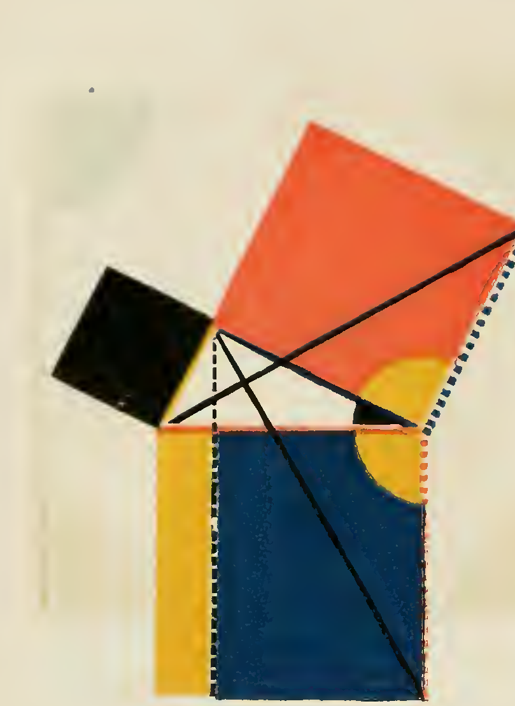

Proposition I.47 — The Pythagorean Theorem¶
Book I, Proposition XLVII. Theorem (Pickering p. 48 · G.140)
In any right-angled triangle, the square which is described upon the side () subtending the right angle is equal to the squares described upon the sides (, ) which contain the right angle.


Given. Right-angled triangle with hypotenuse subtending the right angle between legs and .
Construction. Describe and on the legs and the hypotenuse square divided by altitude parallel ([I.46], [I.31]) into and ; draw windmill chords and ([I.post.1]).
Demonstration.
By collinearity of adjacent right angles ([I.14]), SAS congruence of the rotated windmill triangles ([I.4]), and double-area parallelograms between the same parallels ([I.41]):
= ,
and symmetrically on the right leg (, ):
= .
∴ + = + ([C.N.2]). Q.E.D.
See Commentary on Proposition I.47.